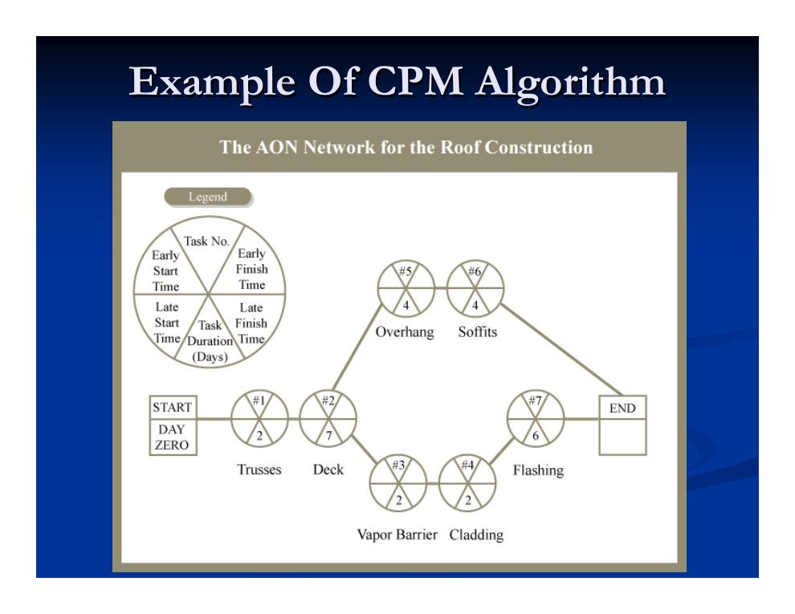
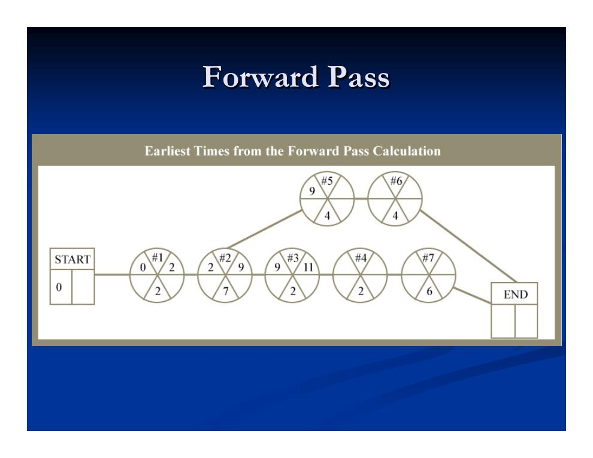
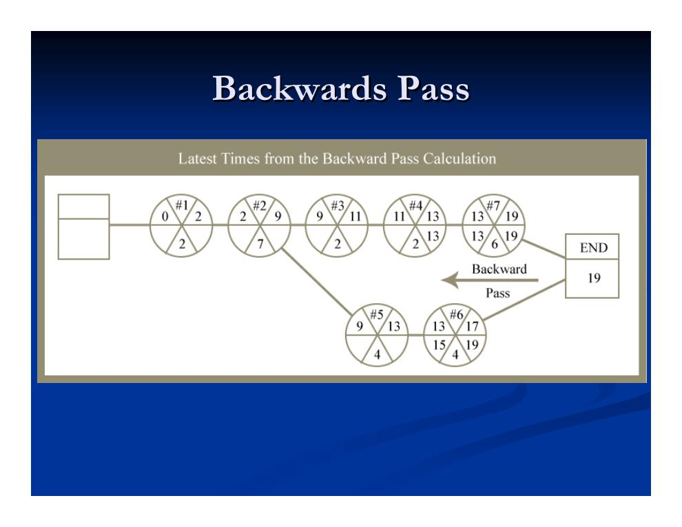
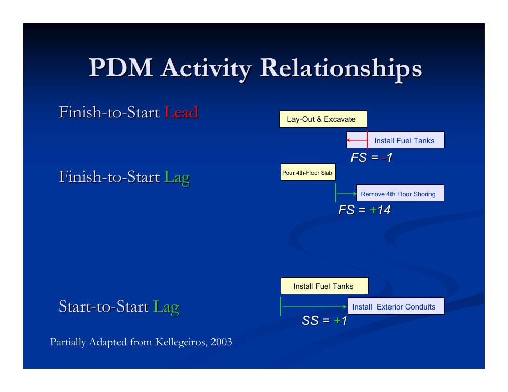
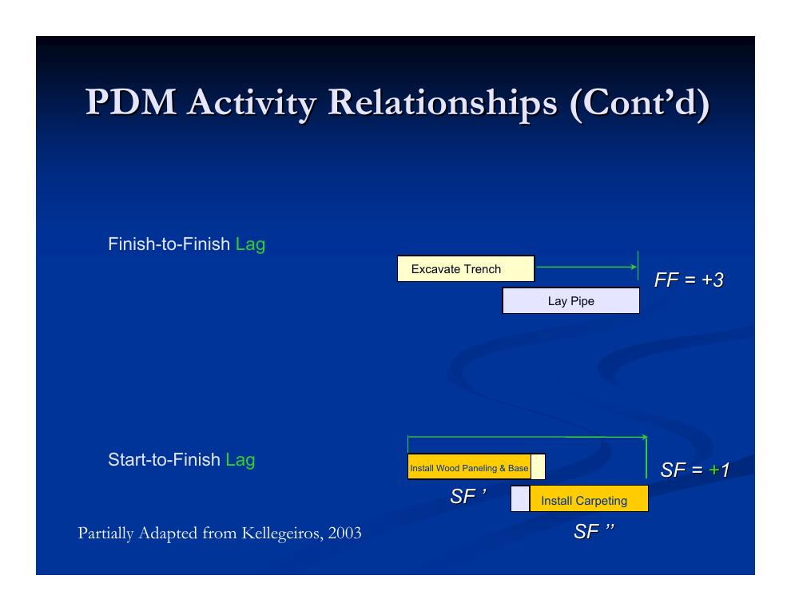
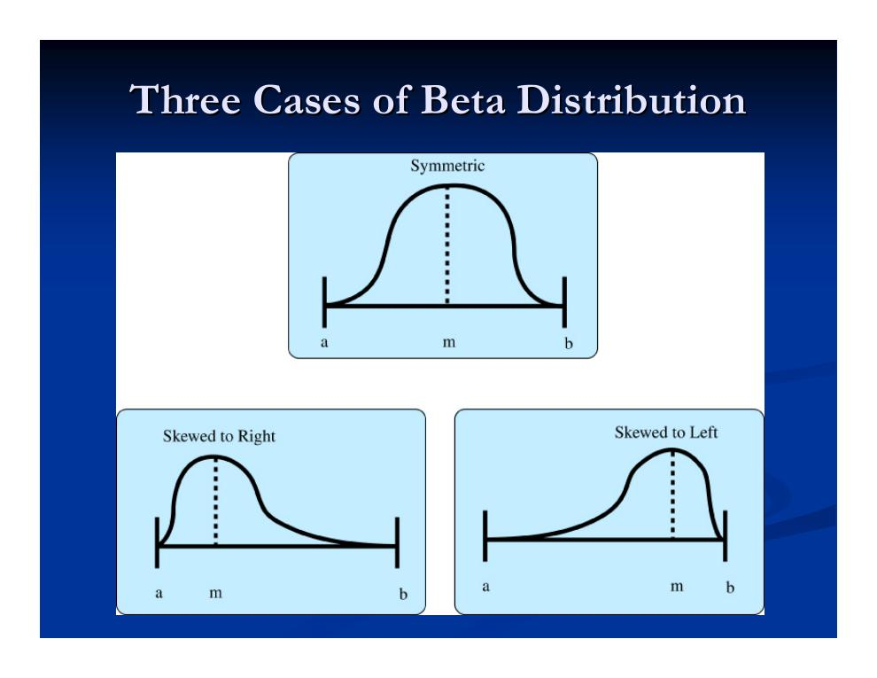
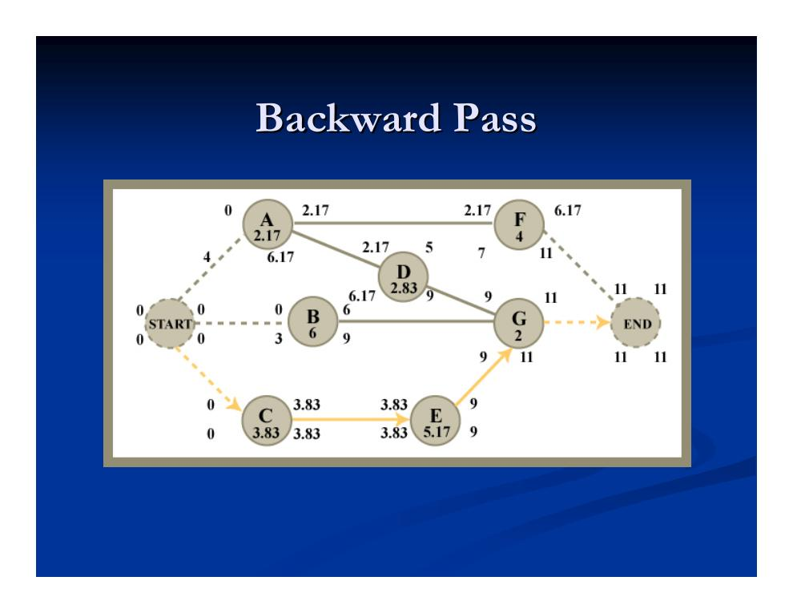

- CPM-Rechenbeispiel: das Dachprojekt in Vorwärts- und Rückwärtsrechnung
- Erweiterte Anordnungsbeziehungen der PDM: FS, SS, FF, SF mit Lag und Lead
- Fallstricke der PDM: verschwindende und kontraintuitive kritische Pfade
- Aktivitätensplitting und Aktivitätsfenster
- Verallgemeinerte Vorwärts- und Rückwärtsrechnung; Umgang mit Leads
- Warum Unsicherheit einplanen? Motivation und Fallbeispiele
- PERT: Grundidee, Beta-Verteilung und Kennwertformeln
- PERT-Rechenbeispiel: Erwartungswert, Varianz und Fertigstellungswahrscheinlichkeiten
CPM-Rechenbeispiel: das Dachprojekt in Vorwärts- und Rückwärtsrechnung
Zur Wiederholung aus Kapitel 4.1: In AON-Netzplänen (Vorgangsknotenmethode, PDM) sitzen die Vorgänge auf den Knoten, ein Vorwärts-/Rückwärtsdurchlauf in linearer Zeit O(n) bestimmt ES, EF, LS und LF, es gibt mehrere Beziehungstypen (FS, SS, FF, SF), und Scheinvorgänge sind nicht erforderlich. Das folgende Beispiel eines Dachaufbaus mit sieben Vorgängen macht die Rechnung konkret:
| Nr. | Vorgang | Dauer (Tage) |
|---|---|---|
| 1 | Dachbinder aufstellen und sichern | 2 |
| 2 | Dachschalung einbauen | 7 |
| 3 | Dampfsperre aufbringen | 2 |
| 4 | Dacheindeckung aufbringen | 2 |
| 5 | Dachüberstand herstellen | 4 |
| 6 | Traufkästen (Soffits) montieren | 4 |
| 7 | Anschlussbleche (Flashing) anbringen | 6 |



Erweiterte Anordnungsbeziehungen der PDM: FS, SS, FF, SF mit Lag und Lead
Die Vorgangsknotenmethode erweitert die klassische CPM um weitere Beziehungstypen jenseits der Normalfolge (Ende–Start) sowie um Zeitabstände: Lags (positive Verzögerungen) und Leads (negative Lags, also Vorläufe). Allgemein gilt für eine Beziehung XY mit Zeitabstand t zwischen den Vorgängen A und B, wobei X, Y ∈ {S, F} (Start, Finish) und t eine reelle Zahl ist: Das Ereignis Y des Vorgangs B darf frühestens t Zeiteinheiten nach dem Ereignis X des Vorgangs A eintreten. Es hilft, sich die Beziehungen als Verknüpfungen zwischen Ereignissen (Start- bzw. Endzeitpunkten) vorzustellen. In der AOA-Darstellung wären solche Spezialbeziehungen unnötig, da sie dort direkt zwischen Ereignisknoten gezeichnet werden können.
- Ende–Start (Finish-to-Start, FS)
- Die Normalfolge: Der Nachfolger startet frühestens t nach dem Ende des Vorgängers. Beispiel für einen Lead (FS = −1): Der Tankeinbau darf einen Tag vor Abschluss von Absteckung und Aushub beginnen. Beispiel für einen Lag (FS = +14): Die Schalung der Decke im 4. OG darf erst 14 Tage nach dem Betonieren ausgebaut werden (Aushärtezeit).
- Start–Start (Start-to-Start, SS)
- Der Nachfolger startet frühestens t nach dem Start des Vorgängers. Beispiel (SS = +1): Die Außenleerrohre können einen Tag nach Beginn des Tankeinbaus begonnen werden.
- Ende–Ende (Finish-to-Finish, FF)
- Der Nachfolger endet frühestens t nach dem Ende des Vorgängers. Beispiel (FF = +3): Die Rohrverlegung kann frühestens 3 Tage nach Abschluss des Grabenaushubs abgeschlossen werden.
- Start–Ende (Start-to-Finish, SF)
- Der Nachfolger endet frühestens t nach dem Start des Vorgängers – die seltenste Beziehung. Beispiel (SF = +1): Der Abschluss der Teppichverlegung hängt am Beginn der Wandvertäfelung.


Fallstricke der PDM: verschwindende und kontraintuitive kritische Pfade
Die zusätzliche Ausdruckskraft hat ihren Preis. Zu den wichtigsten Vorbehalten:
- Unterschiedliche Beziehungskonstrukte können dieselben Termine liefern, aber Verschiedenes bedeuten – und der kritische Pfad kann sich unterscheiden. Man muss die Semantik der Beziehungen in der konkret verwendeten Software genau verstehen; „Lag“ und „Lead“ sind nicht einheitlich definiert.
- Asymmetrien erschweren das Denken: Ein Vorgang kann unterschiedliche Puffer für Start und Ende haben (Startpuffer LS − ES, Endpuffer LF − EF), weil Start- und Endereignis verschiedene Nachfolger haben können.
- Die Wahl der Beziehung (z. B. Ende–Start vs. Start–Start) verändert den kritischen Pfad. Man sollte sich den kritischen Pfad als durch Ereignisse laufend vorstellen; ein nicht kritischer Vorgang kann einen kritischen Start oder ein kritisches Ende haben. Wie der kritische Pfad angezeigt wird, hängt von der Software ab.
- Ohne Splitting entstehen kontraintuitive Fälle: Eine längere Vorgangsdauer kann den kritischen Pfad verkürzen – das Projekt wäre schneller fertig. Ende–Ende-Beziehungen mit Vorläufen können sogar zu einem „verschwindenden“ kritischen Pfad führen, bei dem kein durchgehender kritischer Pfad mehr angezeigt wird.
Aktivitätensplitting und Aktivitätsfenster
Splitting Teil 1 – nicht sequenzielle Teilung: Manche Algorithmen erlauben es, einen Vorgang in zwei zeitlich getrennte Stücke zu zerlegen. Das schafft Flexibilität bei Zeit- und Ressourcenbedarf, ermöglicht kürzere kritische Pfade, beseitigt die kontraintuitiven Fälle, in denen längere Vorgänge vorteilhaft wären, und erlaubt es Vorgängern (bei SF-/SS-Beziehungen) früher zu beginnen bzw. Nachfolgern (bei SF-/FF-Beziehungen) den Großteil ihrer Arbeit vorzuziehen und nur auf das letzte Ereignis zu warten.
Praxisbeispiel aus der Vorlesung: Wegen der Chefetage darf die Teppichverlegung erst enden, nachdem die Wandvertäfelung begonnen hat – die Tischler werden aber anderweitig gebraucht. Lösung durch Splitting: erst alle Teppiche außer der Chefetage verlegen, die Tischler in der Chefetage arbeiten lassen, danach den Teppich dort fertigstellen; die Tischler kehren zum Abschluss ihrer Arbeiten zurück, sobald sie frei sind.
Splitting Teil 2 – Pipelining: Monolithische Aufgaben werden in parallel arbeitende Teilaufgaben zerlegt (Fließfertigung). Das erhöht typischerweise den Ressourcenbedarf, geschieht in der Regel manuell – für eine Automatisierung fehlen meist die Informationen – und wird oft über Start–Start-Beziehungen abgebildet.
Aktivitätsfenster (Activity Windows): Mit Fenstern lassen sich absolute Zeitrestriktionen auf einzelne Vorgänge legen – für jeden der vier Zeitpunkte ES, EF, LS, LF. Setzt man das Fenster für frühesten und spätesten Start gleich (WES = WLS), fixiert man den Termin exakt. Besonders nützlich ist das für zeitkritische Meilensteine.
Verallgemeinerte Vorwärts- und Rückwärtsrechnung; Umgang mit Leads
Mit den erweiterten Beziehungen und Fenstern verallgemeinert sich die Terminrechnung (hier ohne Splitting und ohne Leads; Dk = Dauer des Knotens k, p = Vorgänger, s = Nachfolger; FSpk usw. bezeichnen die Zeitabstände der jeweiligen Beziehung):
ESk = max über alle Vorgänger p von:
• Projektanfangstermin,
• WESk (Fenster frühester Start), • WEFk − Dk,
• EFp + FSpk, • ESp + SSpk,
• EFp + FFpk − Dk, • ESp + SFpk − Dk
und EFk = ESk + Dk.
Kerngedanke: Ein Vorgang kann erst starten, wenn alle Vorgängerbedingungen erfüllt sind – daher das Maximum.
LFk = min über alle Nachfolger s von:
• Projektendtermin,
• WLFk, • WLSk + Dk,
• LSs − FSks, • LFs − FFks,
• LSs − SSks + Dk, • LFs − SFks + Dk
und LSk = LFk − Dk.
Kerngedanke: Ein Vorgang muss so rechtzeitig fertig sein, dass alle Nachfolger pünktlich starten können – daher das Minimum.
Sobald Leads (negative Lags) ins Spiel kommen, reichen zwei O(n)-Durchläufe unter Umständen nicht mehr aus. Der Grundansatz: Man übersetzt das AON-Netz in eine AOA-ähnliche Form, in der Start- und Endknoten jedes Vorgangs explizit sind – das hilft auch beim Durchdenken der Bedeutung – und löst die Terminrechnung mit dem Dijkstra-Algorithmus in O(V·lg V + E). Der „vereinheitlichte Algorithmus“ der Vorlesung arbeitet mit Distanzmarken: In der Vorwärtsrechnung wird vom Projektstartknoten aus wiederholt der Knoten mit der größten vorläufigen Marke fixiert und seine ausgehenden Kanten werden relaxiert, bis der Projektendknoten erreicht ist; die früheste Ereigniszeit ist dann E(i) = PL(i). Für die Rückwärtsrechnung kehrt man alle Kantenrichtungen um, startet beim Projektende und setzt L(i) = E(PF) − PL(i).
Warum Unsicherheit einplanen? Motivation und Fallbeispiele
Reale Terminpläne stecken voller Unsicherheit: Wetterereignisse, Planungsdauern, Produktivität, Lieferzeiten, Qualität der Nachunternehmer, regulatorische Änderungen und mehr. Auftraggeber und Öffentlichkeit wollen Meilensteine und Endtermine mit Vertrauensniveau kennen – für Mieterbezugstermine, Verkehrsplanung oder Veranstaltungsplanung. Hinzu kommt das Durchdenken saisonaler Randbedingungen (Wetterfenster, Verkehrsspitzen). Und: Terminüberschreitungen wiegen oft deutlich schwerer, als eine frühere Fertigstellung nützt.
- Fall 1 – Logan International Terminal (Boston): Verkaufsflächenmieter und Fluggesellschaften verlangten einen festen Termin; man setzte probabilistische Terminplanung ein, um die Unsicherheit zu quantifizieren.
- Fall 2 – Kinderkrankenhaus Philadelphia: Zu berücksichtigen waren Einsätze des Rettungshubschraubers, der Betrieb der Patientenbereiche, enge Arbeitszeitfenster (2–4 Uhr nachts) und Eventualplanungen für die Verlegung der Telefonzentrale.
Die informellen Umgangsweisen mit Unsicherheit sind verbreitet, aber unbefriedigend: am häufigsten schlicht ignorieren (mit erwarteten Dauern rechnen und hoffen, dass sich Fehler ausgleichen), pauschale Zuschlagsfaktoren anwenden oder „Was-wäre-wenn“-Szenarien für einen optimistischen, einen wahrscheinlichsten und einen pessimistischen Fall durchspielen.
PERT: Grundidee, Beta-Verteilung und Kennwertformeln
Die Program Evaluation and Review Technique (PERT, Ereignisknoten-gestützte Programmbewertungs- und -überprüfungstechnik) wurde 1958 von der US Navy gemeinsam mit Booz Allen Hamilton und Lockheed für das Polaris-Raketen-/U-Boot-Programm entwickelt. Sie erfasst probabilistische Vorgangsdauern und erlaubt eine analytische Lösung für Projektdauer und Terminvarianz. Die Grundannahmen:
- Jede Vorgangsdauer folgt einer Beta-Verteilung. Diese ist auf das Intervall [a, b] begrenzt und kann – anders als die Normalverteilung – garantiert nicht negativ werden; je nach Lage des Modus ist sie symmetrisch, rechtsschief oder linksschief.
- Die Projektdauer wird als normalverteilt angenommen: Als (näherungsweise) Summe vieler Zufallsvariablen tendiert sie nach dem zentralen Grenzwertsatz zur Normalverteilung.
- Die Vorgangsdauern werden als unabhängig angenommen – was in der Realität nicht immer erfüllt ist.

Für jeden Vorgang werden drei Zeitschätzungen erhoben – daraus ergeben sich die PERT-Kennwerte:
a = optimistische Dauer · m = wahrscheinlichste Dauer (Modus, nicht Mittelwert!) · b = pessimistische Dauer
Herleitung als gewichtetes Mittel: d̄ = ⅓ · [ 2m + ½ (a + b) ] – der Modus zählt doppelt so stark wie das Mittel der Extremwerte.
Interpretation: Die Spannweite b − a wird als ±3 Standardabweichungen gelesen.
Die Schritte der PERT-Analyse:
- Für jeden Vorgang k die Schätzungen ak, mk, bk erheben und daraus erwartete Dauer dk und Varianz vk berechnen.
- Die erwartete Projektdauer Te mit dem gewöhnlichen CPM-Algorithmus (auf Basis der erwarteten Dauern) bestimmen.
- Die Projektvarianz V = S² als Summe der Varianzen der Vorgänge auf dem kritischen Pfad berechnen (setzt Unabhängigkeit voraus!). Bei mehreren kritischen Pfaden den mit der größten Varianz verwenden.
- Die Wahrscheinlichkeit termingerechter Fertigstellung berechnen – unter der Annahme normalverteilter Projektdauer.
PERT-Rechenbeispiel: Erwartungswert, Varianz und Fertigstellungswahrscheinlichkeiten
Das Beispielprojekt umfasst sieben Vorgänge; aus den drei Zeitschätzungen sind erwartete Dauer d und Varianz v je Vorgang bereits mit den obigen Formeln berechnet (z. B. Vorgang A: d = (1 + 4·2 + 4)/6 = 2,17 und v = ((4 − 1)/6)² = 0,25):
| Vorgang | Vorgänger | a | m | b | d = (a+4m+b)/6 | v = ((b−a)/6)² |
|---|---|---|---|---|---|---|
| A | – | 1 | 2 | 4 | 2,17 | 0,25 |
| B | – | 5 | 6 | 7 | 6,00 | 0,11 |
| C | – | 2 | 4 | 5 | 3,83 | 0,25 |
| D | A | 1 | 3 | 4 | 2,83 | 0,25 |
| E | C | 4 | 5 | 7 | 5,17 | 0,25 |
| F | A | 3 | 4 | 5 | 4,00 | 0,11 |
| G | B, D, E | 1 | 2 | 3 | 2,00 | 0,11 |

Die Projektvarianz ergibt sich aus den Varianzen der kritischen Vorgänge C, E und G:
S² = V[C] + V[E] + V[G] = 0,25 + 0,25 + 0,1111 = 0,6111
S = √0,6111 = 0,7817
Wahrscheinlichkeit, vor Tag 10 fertig zu sein (nur kritischer Pfad betrachtet): Die Projektdauer T wird als normalverteilt mit Mittelwert Te und Standardabweichung S angenommen; z ist die standardnormalverteilte Größe, P(z ≤ …) liest man aus der Tabelle der Standardnormalverteilung ab:
= 1 − P( z ≤ 1,2793 ) = 1 − 0,8997 = 0,1003 ≈ 10 %
Wahrscheinlichkeit, vor Tag 13 fertig zu sein:
Wahrscheinlichkeit, zwischen Tag 9 und Tag 11,5 fertig zu werden – als Differenz zweier Unterschreitungswahrscheinlichkeiten:
= P( z ≤ (11,5 − 11)/0,7817 ) − P( z ≤ (9 − 11)/0,7817 )
= P( z ≤ 0,6396 ) − P( z ≤ −2,5585 )
= 0,7389 − [1 − 0,9948] = 0,7389 − 0,0052 = 0,7337 ≈ 73 %